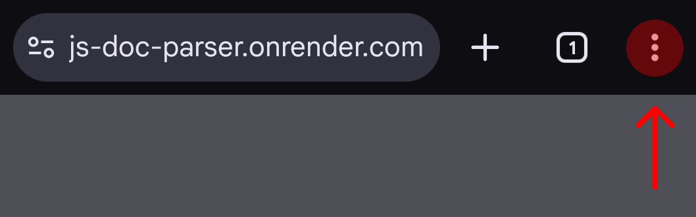

Для роботи на Android та PC 1. Додати цю сторінку як застосунок Doc Parser на робочий стіл 2. Поділитися одним або декількома DOCX-файлами з цим застосунком


Для роботи на iPhone 1. Переконатися, що встановлено застосунок Shortcuts 2. Завантажити Shortcut Flight Parser 3. Поділитися одним або декількома DOCX-файлами через цей Shortcut
Для роботи через cURL # 1. Запакувати документи у ZIP-архів ... # 2. Надіслати архів до серверу для обробки та зберегти результат у вигляді HTML-сторінки curl https://go-doc-parser.onrender.com -F "in=@documents.zip" > out.html